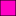
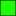

<!doctype html>
<html lang="en">
    <head>
        <meta charset="utf-8">
        <meta http-equiv="X-UA-Compatible" content="IE=edge">
        <meta name="viewport" content="initial-scale=1,user-scalable=no,maximum-scale=1,width=device-width">
        <meta name="mobile-web-app-capable" content="yes">
        <meta name="apple-mobile-web-app-capable" content="yes">
        <link rel="stylesheet" href="css/leaflet.css">
        <link rel="stylesheet" href="css/qgis2web.css"><link rel="stylesheet" href="css/fontawesome-all.min.css">
        <link rel="stylesheet" href="css/leaflet-measure.css">
        <style>
        html, body, #map {
            width: 100%;
            height: 100%;
            padding: 0;
            margin: 0;
        }
        </style>
        <title></title>
    </head>
    <body>
        <div id="map">
        </div>
        <script src="js/qgis2web_expressions.js"></script>
        <script src="js/leaflet.js"></script>
        <script src="js/leaflet.rotatedMarker.js"></script>
        <script src="js/leaflet.pattern.js"></script>
        <script src="js/leaflet-hash.js"></script>
        <script src="js/Autolinker.min.js"></script>
        <script src="js/rbush.min.js"></script>
        <script src="js/labelgun.min.js"></script>
        <script src="js/labels.js"></script>
        <script src="js/leaflet-measure.js"></script>
        <script src="data/Pavement_1.js"></script>
        <script>
        var map = L.map('map', {
            zoomControl:true, maxZoom:22, minZoom:15
        }).fitBounds([[40.346580394718195,-74.63331460531748],[40.35630570031671,-74.60981142935978]]);
        var hash = new L.Hash(map);
        map.attributionControl.setPrefix('<a href="https://github.com/tomchadwin/qgis2web" target="_blank">qgis2web</a> &middot; <a href="https://leafletjs.com" title="A JS library for interactive maps">Leaflet</a> &middot; <a href="https://qgis.org">QGIS</a>');
        var autolinker = new Autolinker({truncate: {length: 30, location: 'smart'}});
        var measureControl = new L.Control.Measure({
            position: 'topleft',
            primaryLengthUnit: 'feet',
            secondaryLengthUnit: 'miles',
            primaryAreaUnit: 'sqfeet',
            secondaryAreaUnit: 'sqmiles'
        });
        measureControl.addTo(map);
        document.getElementsByClassName('leaflet-control-measure-toggle')[0]
        .innerHTML = '';
        document.getElementsByClassName('leaflet-control-measure-toggle')[0]
        .className += ' fas fa-ruler';
        var bounds_group = new L.featureGroup([]);
        function setBounds() {
        }
        map.createPane('pane_Image_0');
        map.getPane('pane_Image_0').style.zIndex = 200;
        var img_Image_0 = 'data/Image_0.png';
        var img_bounds_Image_0 = [[40.34683289615818,-74.62665243605235],[40.35605369267409,-74.61647063742707]];
        var layer_Image_0 = new L.imageOverlay(img_Image_0,
                                              img_bounds_Image_0,
                                              {pane: 'pane_Image_0'});
        bounds_group.addLayer(layer_Image_0);
        map.addLayer(layer_Image_0);
        function pop_Pavement_1(feature, layer) {
            var popupContent = '<table>\
                    <tr>\
                        <th scope="row">Pavement type</th>\
                        <td>' + (feature.properties['Type'] !== null ? autolinker.link(feature.properties['Type'].toLocaleString()) : '') + '</td>\
                    </tr>\
                    <tr>\
                        <th scope="row">Square feet</th>\
                        <td>' + (feature.properties['Square_Fee'] !== null ? autolinker.link(feature.properties['Square_Fee'].toLocaleString('en-US', {minimumFractionDigits: 0, maximumFractionDigits: 0})) : '') + '</td>\
                    </tr>\
                    <tr>\
                        <th scope="row">Parcel</th>\
                        <td>' + (feature.properties['Parcel'] !== null ? autolinker.link(feature.properties['Parcel'].toLocaleString()) : '') + '</td>\
                    </tr>\
                </table>';
            layer.bindPopup(popupContent, {maxHeight: 400});
        }

        function style_Pavement_1_0(feature) {
            switch(String(feature.properties['Type'])) {
                case 'Street':
                    return {
                pane: 'pane_Pavement_1',
                opacity: 1,
                color: 'rgba(0,0,0,0.5)',
                dashArray: '',
                lineCap: 'butt',
                lineJoin: 'miter',
                weight: 1.0, 
                fill: true,
                fillOpacity: 1,
                fillColor: 'rgba(204,204,204,0.4)',
                interactive: true,
            }
                    break;
                case 'Driveway':
                    return {
                pane: 'pane_Pavement_1',
                opacity: 1,
                color: 'rgba(0,0,0,0.5)',
                dashArray: '',
                lineCap: 'butt',
                lineJoin: 'miter',
                weight: 1.0, 
                fill: true,
                fillOpacity: 1,
                fillColor: 'rgba(255,0,197,0.4)',
                interactive: true,
            }
                    break;
                case 'Sidewalk':
                    return {
                pane: 'pane_Pavement_1',
                opacity: 1,
                color: 'rgba(0,0,0,0.4)',
                dashArray: '',
                lineCap: 'butt',
                lineJoin: 'miter',
                weight: 1.0, 
                fill: true,
                fillOpacity: 1,
                fillColor: 'rgba(27,252,6,0.5)',
                interactive: true,
            }
                    break;
            }
        }
        map.createPane('pane_Pavement_1');
        map.getPane('pane_Pavement_1').style.zIndex = 401;
        map.getPane('pane_Pavement_1').style['mix-blend-mode'] = 'normal';
        var layer_Pavement_1 = new L.geoJson(json_Pavement_1, {
            attribution: '',
            interactive: true,
            dataVar: 'json_Pavement_1',
            layerName: 'layer_Pavement_1',
            pane: 'pane_Pavement_1',
            onEachFeature: pop_Pavement_1,
            style: style_Pavement_1_0,
        });
        bounds_group.addLayer(layer_Pavement_1);
        map.addLayer(layer_Pavement_1);
        var baseMaps = {};
        L.control.layers(baseMaps,{'Pavement<br /><table><tr><td style="text-align: center;"></td><td>Street</td></tr><tr><td style="text-align: center;"></td><td>Driveway</td></tr><tr><td style="text-align: center;"></td><td>Sidewalk</td></tr></table>': layer_Pavement_1,"Image": layer_Image_0,},{collapsed:false}).addTo(map);
        setBounds();
        L.ImageOverlay.include({
            getBounds: function () {
                return this._bounds;
            }
        });
        </script>
    </body>
</html>
